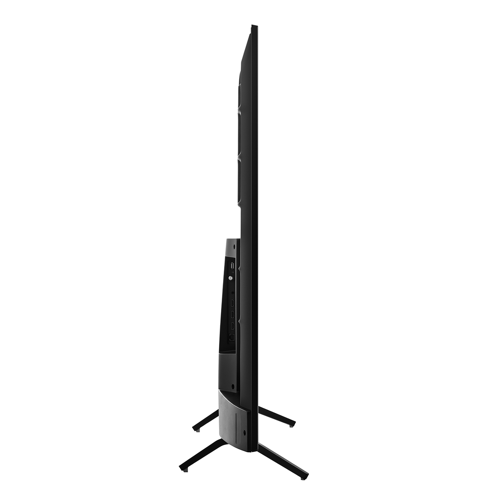
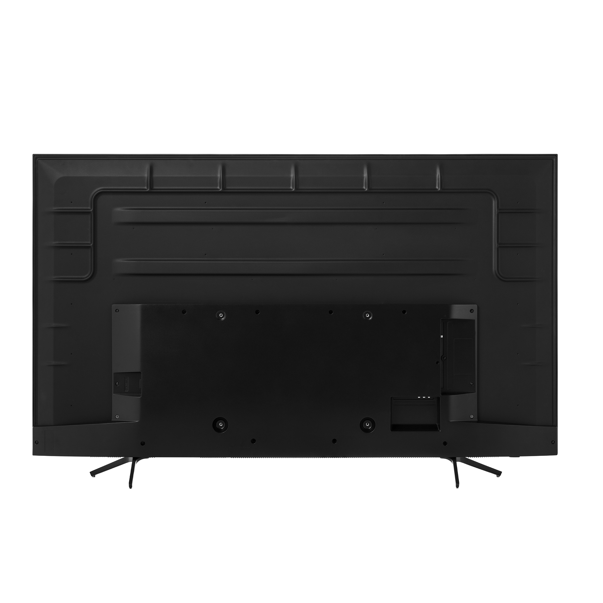
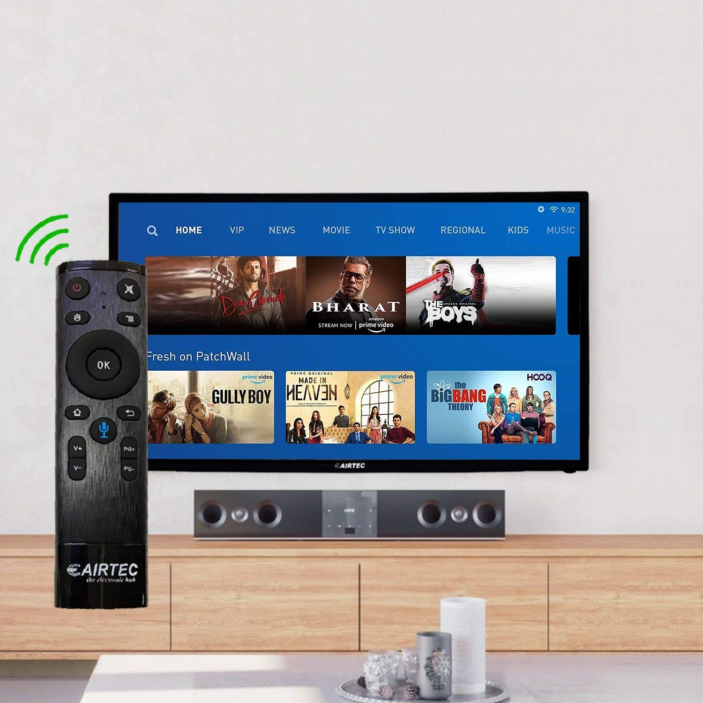

From Live TV, App and VOD, Smart Hub brings your favorite content together in one place, while the elegantly refined One Remote Control gives you effortless access and control. Devices that are automatically recognized by QLED can be easily controlled—no need for separate remote controls.
Sleek. Cutting edge. Refined. Precise. The our Ultra Slim silhouette. That something so slim can inspire so much interest shouldn’t be surprising, given how much sophistication it will bring to your décor.
UMF3 , Fixed wall mount , f3 , UM F3 , Flat wall mount , Ultimate mounts UMF3 , UMF3 Ultra Slim , Ultimate mounts UMF3 Ultra Slim Ultimate Mounts Range View Pull Out Tilt and Turn Black TV Mount For 42"- 80" TVs
remote voice control
R9 999 only
11 items In Stock
Oder Now
1 year Standard Manufacture warranty from eAirtec.
Easy Returns: This product is Eligible for Replacement within 10 Days Of Delivery In Case Of Any Product Defects, Damage or Features Not Matching The Description Provided.
Resolution: HD Ready (1366 x 768p)| Refresh Rate: 60Hz
Sound: 20 Watss Output
Display: IPS Grade Panel | 178 Degree Viewing Angle | Wide Colour Enhancer
Smart TV Features: Android 8.0 (Oreo) | In-Built WI-FI | 1GB RAM | 8GB ROM | Voice Control Remote
Installation: For Installation/Wall Mounting/Demo Of This Product Once Delivered, Directly Contact_Us and Provide Product's Model Name and Seller's Details Mentioned on The Invoice. The Service Center Woll Allot You A Convenient Slot For The Seervice
| Width | 73.5cm |
|---|---|
| Height | 43.7cm |
| Specs | Internet access, Netflix, social media pages, Voice control button, 2 HDMI ports,2 USB ports,1 VGA slot, 1 headphone jack, 2 AV slots, 1 RF slot. |
| Set Weight With Stand | 30.9Kg |
| Power Consumption (Max) | 3700 |
| Stand type | T-Center |